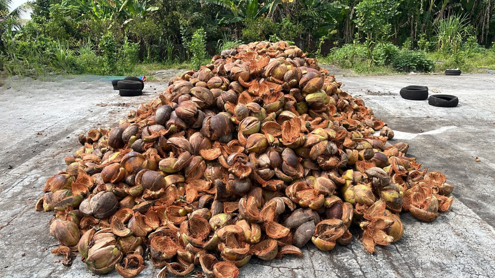
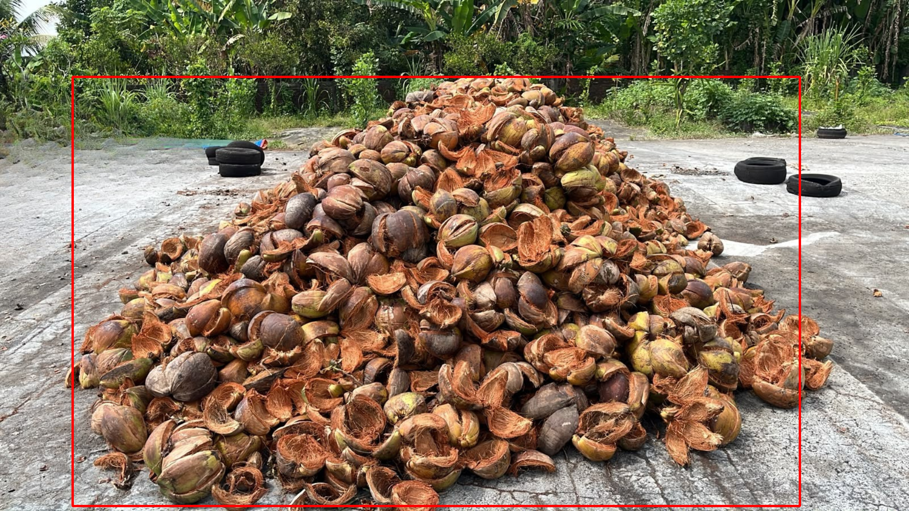
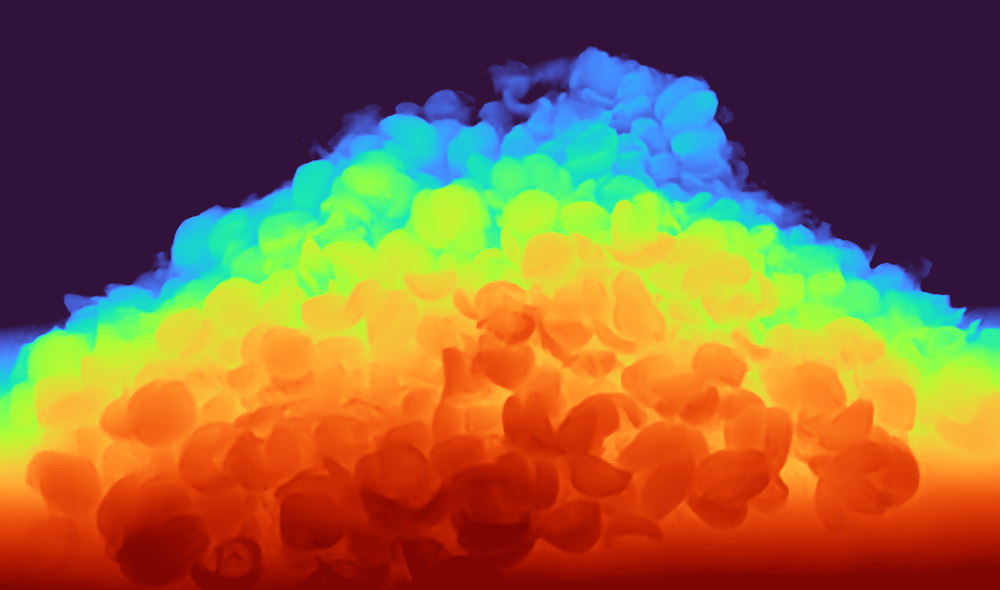

Coconut Shell Stockpile
Volume & Tonnage Estimator
A computer-vision tool that estimates the volume (m³) and tonnage (ton) of a coconut shell stockpile from a single photo, a video, or a live webcam feed.
It runs a pretrained monocular depth estimation model (Depth Anything V2 — Metric Indoor Large) to reconstruct a height map of the pile, then converts that height map into volume and tonnage using simple camera geometry — no manual measuring tape required.

From a single photo to a tonnage estimate
The pipeline turns one 2D frame into a real-world measurement in five steps, chaining a depth model with a bit of camera geometry.
-
1
Depth estimation
The input image or frame is passed through a pretrained depth model to produce a per-pixel depth map.
-
2
Region of interest (ROI)
A configurable crop focuses on the stockpile area and ignores background or floor clutter.
-
3
Height reconstruction
Using the camera's height and horizontal distance to the pile, each pixel's depth is converted into a real-world height above the ground.
-
4
Volume & tonnage
Pixel heights are converted to real-world area using the camera's horizontal field of view, then summed into a volume estimate. Volume is multiplied by a configurable specific gravity to get tonnage.
-
5
Visualization
The tool saves a color-mapped depth image, an ROI overlay, and a height heatmap for inspection.
Image mode output
Each run saves a depth map, an ROI overlay, and a height heatmap to the Output/ folder.



Good to know
- Estimates are only as accurate as the camera geometry parameters —
camera_height_m,horizontal_distance_m, andcamera_horizontal_fov_degshould be measured carefully for the real setup. - The depth model is general-purpose and not fine-tuned specifically on coconut shell piles, so results are approximate and best used for relative or trend monitoring rather than precise auditing.
- Video and webcam mode don't run inference on every frame — the interval is controlled by
--infer-interval, since the depth model is computationally heavy.